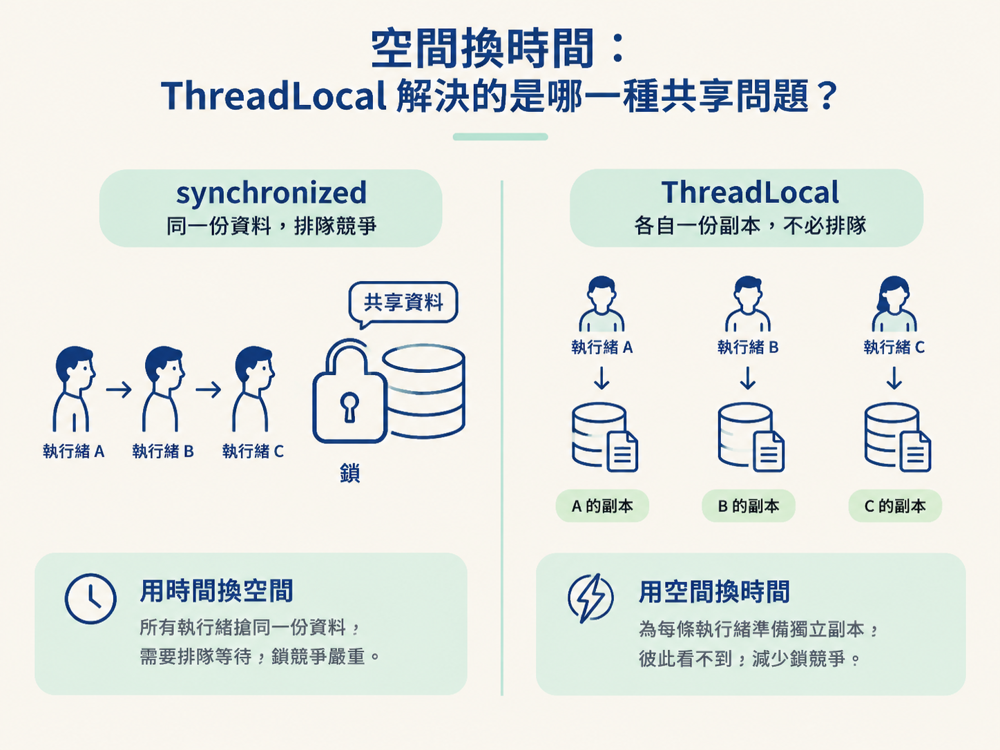
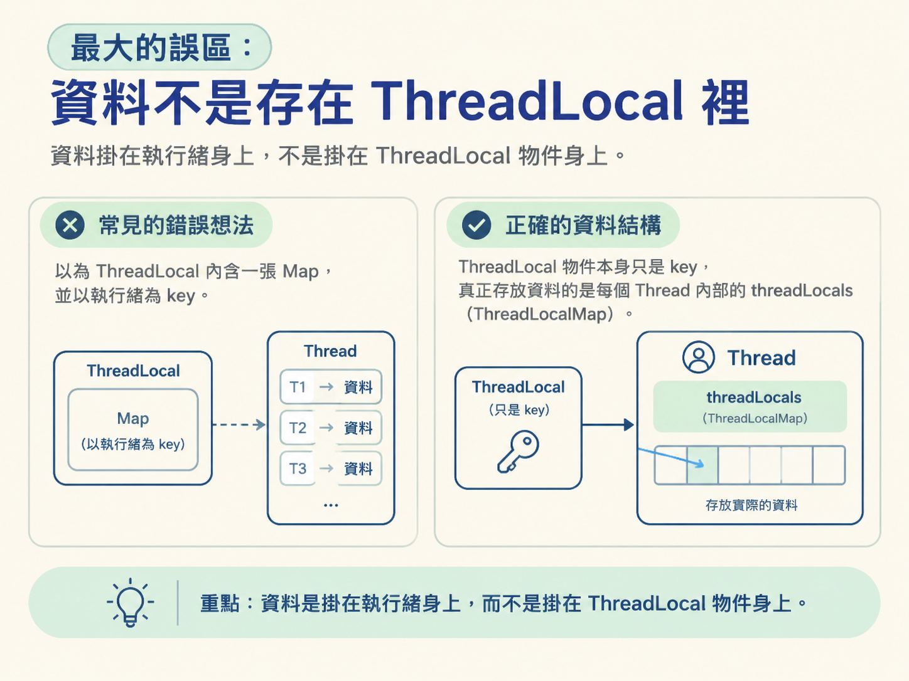
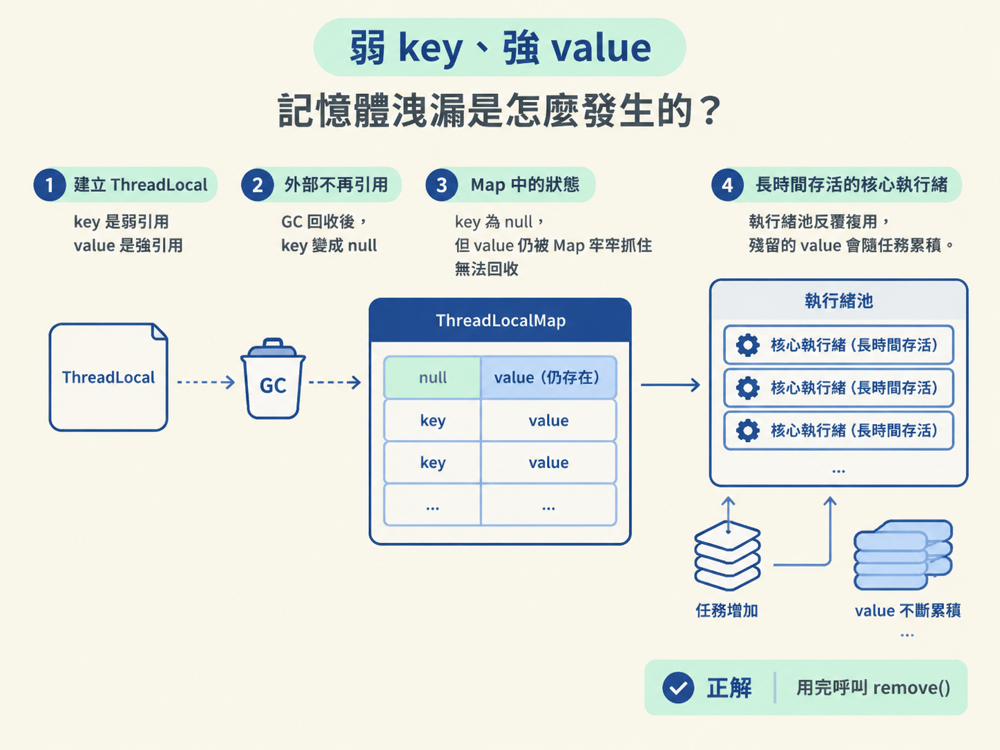
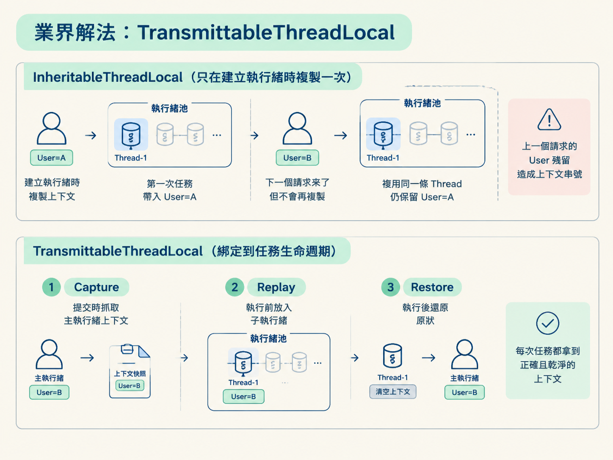

這一節要搞懂幾個彼此相連的問題：ThreadLocal 為什麼是「空間換時間」；資料為什麼實際存在 Thread 物件裡；弱 key、強 value 為什麼可能造成記憶體洩漏；以及 InheritableThreadLocal 為什麼在執行緒池裡會串號，TransmittableThreadLocal 又是怎麼補上這個缺口。
想像你正在寫一個 Web 服務。請求進來後，你先從登入資訊裡解出 userId 和 traceId。接著請求一路經過 service、DAO，每一層的方法簽名都得帶上這兩個參數，只為了讓最底層的某一行程式碼能讀到它們。
參數一多，方法簽名就像行李愈塞愈滿的旅行箱。於是你可能把這些資料包成一個 Context 物件繼續往下傳，但本質上仍然一樣：同一條執行緒上的程式明明共享著同一份請求資訊，卻只能靠參數接力。
ThreadLocal 就是用來處理這個問題的。它讓你把資料掛在「當前執行緒」身上，之後同一條執行緒上的程式碼都能直接取用，不必層層傳參數。
不過，ThreadLocal 也常和兩個麻煩一起出現：有人說它可能造成記憶體洩漏，也有人遇過執行緒池裡拿到別人的資料。這些問題都是真的，而且都和同一個設計選擇有關：資料究竟放在哪裡，又是在什麼時機被複製與清理。先把這個核心機制弄懂，後面的坑就不會只剩下背誦。
多條執行緒要操作資料時，最直覺的做法是加鎖，例如使用 synchronized。同一時間只讓一條執行緒進入，其他執行緒在外面排隊。這種做法保住了同一份共享資料，但代價是等待時間增加，可以看成是用時間換空間。
ThreadLocal 走的是另一條路：它不讓所有執行緒搶同一份資料，而是替每條執行緒準備一份獨立副本。A 執行緒修改自己的資料，B 執行緒修改自己的資料，兩者彼此看不到，自然也不必為了同一把鎖排隊。這就是用空間換時間：多占一些記憶體，換取較少的鎖競爭。

因此，是否適合使用 ThreadLocal，關鍵不是「它能不能讓我少傳幾個參數」，而是要問：這份資料是不是每條執行緒各有一份，而且不應該互相看到？
userId、交易上下文、Session 這類資料，通常符合這個條件。可是，如果資料是所有執行緒都必須看到同一份、而且要即時同步的庫存數字，ThreadLocal 就不適合。每條執行緒各自看一份副本，最後只會得到各說各話的結果。
很多人第一次接觸 ThreadLocal 時，會想像成這樣：ThreadLocal 物件裡有一張 Map，key 是執行緒，value 是資料。這個模型剛好把方向想反了，而這個差異正是理解後續問題的關鍵。
實際上，每個 Thread 物件裡都有一個名為 threadLocals 的成員變數，型別是 ThreadLocalMap。 換句話說，資料是掛在執行緒身上，不是掛在 ThreadLocal 物件身上。

你可以把 ThreadLocalMap 想成一個簡化版的 HashMap，專門收納某一條執行緒自己的資料。當你呼叫：
threadLocal.set("data")
實際流程是先找到當前執行緒的 threadLocals，再把 threadLocal 這個物件本身當成 key，把 "data" 當成 value 存進去。呼叫 get() 時，也是一樣先找到當前執行緒的 Map，再用這個 ThreadLocal 當 key 取值。
這種設計帶來一個好處：同一個 ThreadLocal 物件可以被很多條執行緒共用，但每條執行緒透過它存進去的資料仍然彼此獨立。
可以把 ThreadLocal 想成「每條執行緒口袋上的同一張名牌」。名牌是同一張，但每條執行緒把自己的東西放進自己的口袋；A 執行緒摸不到 B 執行緒口袋裡的內容。
ThreadLocalMap 的 key 是弱引用（WeakReference），value 則是強引用。一邊容易被回收，一邊牢牢抓住物件，這種不對稱就是問題的起點。
當外部已經沒有任何地方引用某個 ThreadLocal 物件時，GC 可以把它回收。這時 Map 裡的 key 會變成 null，但 value 仍被 Map 強引用著，因此還無法被回收。
結果就會出現一筆「key 不見了、value 卻還卡在 Map 裡」的資料。因為你已經找不到原本的 key，所以再也無法正常取用它；但在它被清掉以前，它又會持續占著記憶體。
如果執行緒很快就結束，通常問題不大，因為整條執行緒和它的 Map 都會一起被回收。真正需要警惕的是執行緒池：池中的核心執行緒建立後會長時間存活，處理完一個任務後不會消失，而是回到池裡等待下一個任務。
於是，殘留的 value 可能隨著任務增加而慢慢堆積，這就是 ThreadLocal 可能造成記憶體洩漏的原因。

正規解法很簡單：誰設定，誰負責清理；用完就呼叫 remove()。 實務上通常放在 finally 裡：
try { ... } finally { threadLocal.remove(); }
這樣即使中途拋出例外，也能確保資料被清掉。雖然 ThreadLocalMap 在 get 或 set 時，可能順手清理部分 key 已經是 null 的項目，但那只是零星補救，不能當成清理策略。真正可靠的做法仍然是主動 remove()。
ThreadLocal 強調的是「每條執行緒各自獨立」。但有時候我們又希望父執行緒的上下文能被子執行緒看見。
例如，主執行緒先解出一個 traceId，接著建立子執行緒處理非同步日誌。若子執行緒拿不到同一個 traceId，原本的全鏈路追蹤就會在這裡斷掉。
常見做法有兩種。第一種是使用共享變數：父子執行緒共用同一個物件或變數，再透過 volatile 保證可見性，或透過 synchronized 與其他鎖機制保證操作安全。
這條路很直白，但資料必須顯式傳進去，某種程度上又回到了最開始那個「參數接力」的問題。
第二種做法是InheritableThreadLocal（ITL）。它是 ThreadLocal 的子類別，會在建立子執行緒的那一刻，自動把父執行緒裡的 ThreadLocal 變數複製一份給子執行緒。子執行緒一出生就帶著父執行緒的上下文，因此適合用在直接建立執行緒的全鏈路追蹤場景。
ITL 在直接呼叫 new Thread() 的情境中通常能正常運作，但放進執行緒池後就可能出現嚴重問題。關鍵在於：ITL 的複製只在建立執行緒時發生一次，之後不會自動同步。
ITL 依賴的是「複製」，執行緒池依賴的是「複用」。這兩個機制的時機剛好對不上。
User=張三，並提交任務給執行緒池。池子建立 Thread-1，因為此時真的發生了「建立執行緒」，ITL 便把張三的資料複製給 Thread-1。Thread-1 回到池裡等待下一個任務。但它身上仍然留著張三的資料，而且沒有被清除。User=李四 提交任務。執行緒池發現 Thread-1 正好空閒，於是直接複用它。這次沒有建立新執行緒，因此 ITL 不會再次觸發複製。Thread-1 開始處理請求 B 時，讀到的仍然是 User=張三。李四因此可能看到張三的資料，日誌中的 traceId 也可能跟著串號。這就是典型的上下文污染。問題不在 ITL 的複製本身，而在於它把複製時機綁在「執行緒建立」上；執行緒池卻把執行緒建立與任務執行分開，之後會反覆複用同一條執行緒。
既然問題出在複製時機，解法就是把複製從執行緒生命週期移到任務生命週期。阿里巴巴開源的 TransmittableThreadLocal（TTL） 就是沿著這個方向設計的：它不再依賴執行緒建立，而是在任務提交或執行時處理上下文。
| 階段 | 做什麼 | 解決的問題 |
|---|---|---|
| Capture（捕獲） | 任務提交或包裝時，抓取當前主執行緒的上下文 | 固定提交當下的值，不依賴子執行緒是否剛建立 |
| Replay（回放） | 子執行緒開始執行任務前，把捕獲到的上下文放入執行環境 | 讓被複用的執行緒每次取得最新且正確的值 |
| Restore（還原） | 任務執行完畢後，把子執行緒恢復成原本的狀態 | 避免這次任務的資料留給下一個任務，造成污染 |
這三個動作合在一起，等於把「複製」從執行緒的生命週期改綁到任務的生命週期。執行緒可以持續複用，但每次任務開始前都換上正確的上下文，結束後再還原原狀，因此上一個請求的資料不會被帶到下一個請求。

ThreadLocal 用「空間換時間」替每條執行緒準備一份私有副本，藉此避開鎖競爭。資料不是存在 ThreadLocal 裡，而是存在Thread.threadLocals這個 ThreadLocalMap 中，並以 ThreadLocal 物件本身作為 key。由於 key 是弱引用、value 是強引用，長時間存活的執行緒在複用任務時可能留下無法正常取出的 value，因此務必在使用完後呼叫remove()。父子執行緒的上下文透傳可以靠 InheritableThreadLocal，但它只在建立執行緒時複製資料，放進執行緒池後就可能發生上下文污染；TTL 則透過 Capture、Replay、Restore，把複製時機改綁到任務本身。
到這裡，ThreadLocal 解決的是「每條執行緒如何擁有自己的上下文」，ITL 與 TTL 解決的則是「上下文如何跨執行緒傳遞」。下一節會把問題往前推一步：當執行緒之間不只要傳資料，還要等待彼此完成時，CountDownLatch 與 CyclicBarrier 分別代表什麼語義？這兩個名字很像，但它們等待的對象其實正好不同。